Manage profiles
Last updated April 23rd, 2026
The Knox MSP Portal’s Profiles feature allows managed service providers to duplicate Enrollment, Knox Configure, and Knox Manage profiles across customer accounts. This streamlines the deployment of standardized configurations, eliminating the need to manually recreate identical profiles for each of your managed customers.
For example, if Customer A has a Knox Manage profile that includes several important Knox Service Plugin policies, that same profile can be copied and applied to Customer B without having to launch their console and repeat the same steps, thus saving time and ensuring consistency.
See the MSP profiles how-to video series for detailed step-by-step walkthroughs of this feature.
Make a profile available for copying
To use the Profiles feature, you must first make one of your managed customer’s profiles available for copying. For example, if Customer A has a profile that you want to copy into Customer B’s account, then you must add Customer A’s profile into the Knox MSP Portal to make it available for copying.
You can only copy profiles from fully managed customer accounts. If a profile is created in a jointly managed customer’s account, then it can’t be made available for copying.
To make a profile available for copying:
-
Go to the Profiles page, then click the COPYABLE PROFILES tab.
-
Click ACTIONS > Add copyable [service name] profiles.
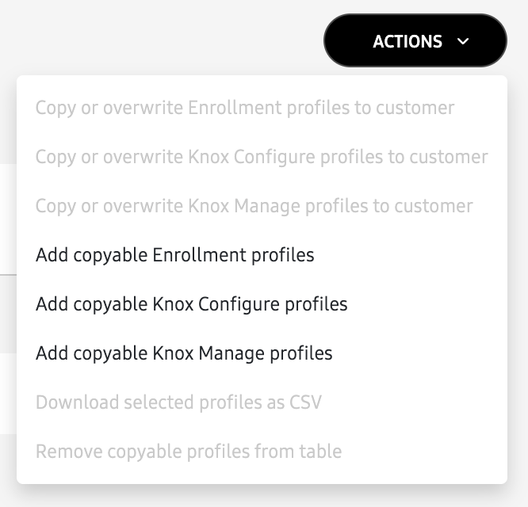
-
On the next page, select the profiles from one of your fully managed customers that you wish to copy. This is considered your Origin profile.
If you have several fully managed customers with multiple profiles, you can use the search bar to find profiles by customer name, Knox customer ID, or profile name.
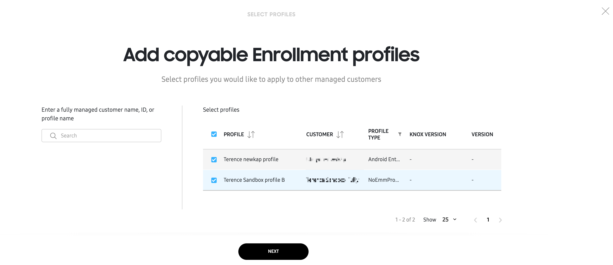
-
Click NEXT. The selected profiles are added to the table on the COPYABLE PROFILES tab.
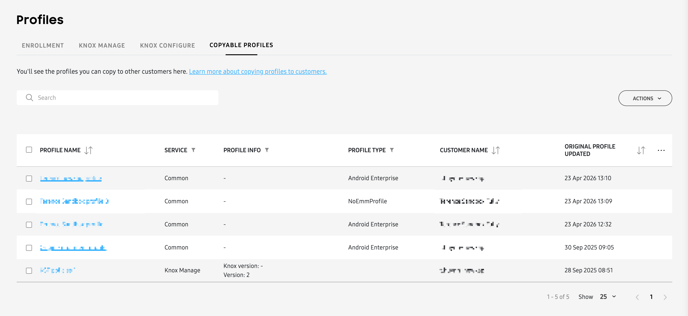
Copy a profile to a target customer
Once a copyable profile is added to the Knox MSP Portal, it can be copied to any fully or jointly managed customers’ account. To do this:
-
On the COPYABLE PROFILES tab, select the profiles you wish to copy, then click ACTIONS > Copy or overwrite to customer.
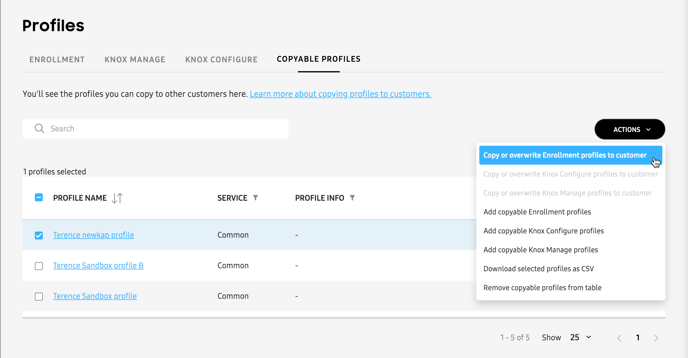
-
On the next page, enter the names of the customers you wish to copy the original profile to. Up to 10 customers can be selected at a time.
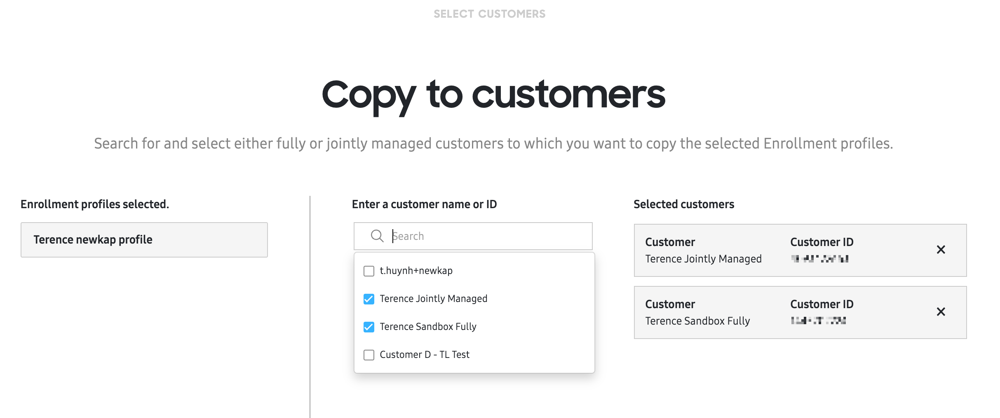
-
Click NEXT, then on the following page, you can give your copied profile a name. This is the name of the profile that appears on the target customer’s account. By default, this is the same name as the origin profile, however, you can change it to something that helps you identify the profile more easily.
Changing this name only affects the target customer’s account. The profile name on the origin customer’s account remains unchanged.
-
Review the EXPECTED RESULT column to see if the profile name already exists in the target customer’s account.
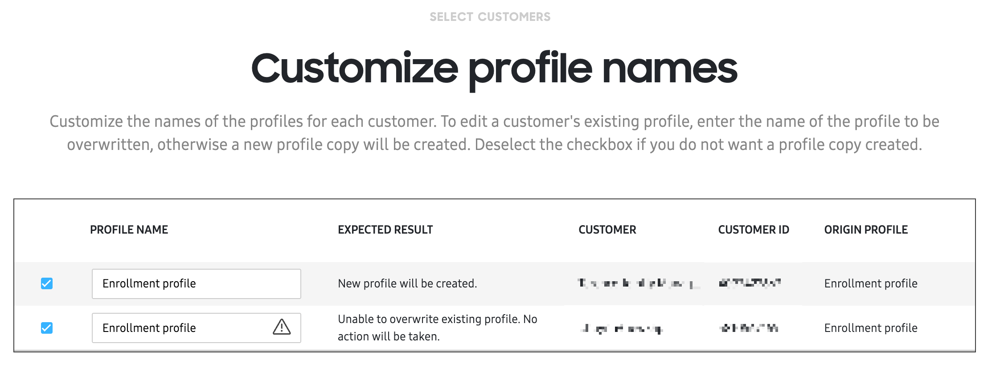
For example, if you are copying a profile from Customer A to Customer B, and the origin profile’s name is “Enrollment profile”, then the following scenarios can occur:
-
If the same profile name doesn’t exist in Customer B’s account, then a new profile is created with the name “Enrollment profile”.
-
If the same profile name already exists, then you’ll see an error icon in the profile name field letting you know that Customer B’s account already has a profile with the name “Enrollment profile”. You must provide a new profile name to continue.
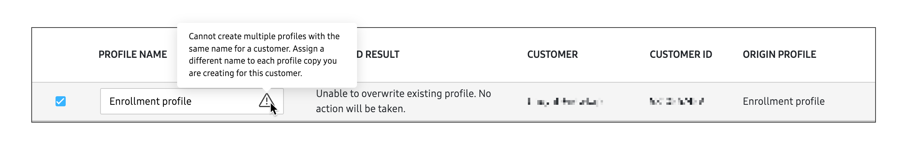
-
If the same profile name already exists on Customer B’s account, but the ORIGIN PROFILE names don’t match, then you’ll also see an error icon in the profile name field. You must provide a new profile name to continue. Origin profile errors can occur in the following ways:
- Multiple profiles with the same name being copied to a target account. For example, copying “Enrollment profile” from Customer A to Customer B, then also trying to copy “Enrollment profile” from Customer C to Customer B.
- Origin profile being renamed and matching an existing name on the target account. For example, copying “New profile” from Customer A to Customer B, but renaming it as “Enrollment profile” will produce an error.
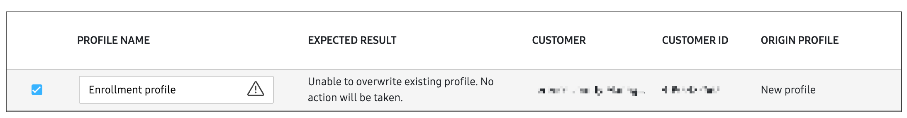
-
-
After you review or change the copied-profile name, click CREATE PROFILES, then review the information on the pop-up and click CONFIRM.
-
Once the profile is copied, go to the respective Knox services tabs on the Profiles page to view the copied profile name, target customer, and name of the origin profile.
Overwrite a profile
If you want to make changes to an origin profile and apply those changes to a target customer, you’ll need to overwrite the copied profile on the target customer’s account. Overwriting primarily involves repeating the copying process, and replacing the previously copied profile with the updated origin profile.
Overwriting a copied profile completely replaces the content with that of the updated origin profile, with a few exceptions for Knox Configure profiles — Customer support information (customer email, phone number, company name) and Routines won’t be overwritten. This is by design, to avoid overwriting individual customer customizations.
To overwrite a copied profile, do the following:
-
First, make your changes to the origin profile. You can quickly do this by going to the COPYABLE PROFILES tab, then clicking the name of the profile you want to update. This will take you to the profile page on the origin customer’s account.
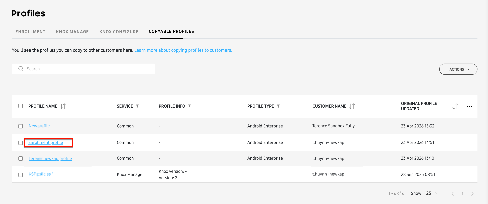
Alternatively, you can open an origin profile’s page by clicking a profile name in the ORIGIN PROFILE column in one of the service tabs.
-
Make your changes as required, then go back to the Knox MSP Portal.
-
In the COPYABLE PROFILES tab, locate the profile you just updated. The latest profile will appear at the top of the table by default, as indicated by the date in the ORIGINAL PROFILE UPDATED column.
For Knox Manage and Knox Configure profiles, you’ll also see an updated version number in the PROFILE INFO column letting you know that the profile was changed.
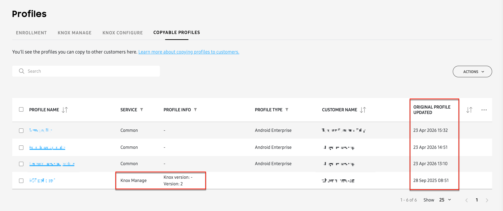
-
Select the updated profile from the list, then click ACTIONS > Copy or overwrite [Knox service] profile to customers.
-
After selecting the target customer, review the profile name, then click CREATE PROFILES, then CONFIRM.
Manage copyable profiles
After you add one or more copyable profiles to your Knox MSP Portal, they will appear in the table of the COPYABLE PROFILES tab on the Profiles page.
The following information is available in the table:
- PROFILE NAME: The name of the profile that you made copyable. This is also referred to as the Origin profile. Click the origin profile’s name to view its details in the customer’s console.
- SERVICE: Indicates the origin profile’s associated Knox service: Common (for Enrollment profiles), Knox Configure, or Knox Manage.
- PROFILE INFO: (Knox Configure and Knox Manage only) Indicates the Knox version and profile version information of the origin profile.
- PROFILE TYPE: Indicates the type of profile, depending on the service:
- Knox Configure: Shows Dynamic or Setup to indicate the type of Knox Configure profile.
- Common: Shows Android Enterprise to indicate that the origin profile is an Enrollment profile configured with an EMM, or NoEmmProfile to indicate that the Enrollment profile is configured without an EMM.
- Knox Manage: No profile type information is shown.
- CUSTOMER NAME: The name of the origin customer from which you copied the profile.
- ORIGINAL PROFILE UPDATED: The date when the original profile was last added or updated.
You can customize the columns displayed in the copyable profiles table through the CUSTOMIZE TABLE menu. To access the menu, click at the top-right corner of the table.
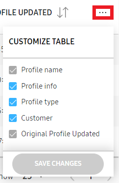
Download copyable profiles as CSV
If you want to download your list of copyable profiles in CSV format for further review, you can do so by selecting one or more profiles from the list, then clicking ACTIONS > Download selected profiles as CSV.
Remove copyable profiles
If you no longer want to manage a copyable profile, you can remove it from the Knox MSP Portal. Note that removing a copyable profile doesn’t actually delete the original profile from the customer’s account, or any profiles copied to a target customer. It only removes the profile from the COPYABLE PROFILES list.
To remove a profile:
- Select the profiles you wish to remove.
- Click ACTIONS > Remove copyable profiles from table.
- Click REMOVE to confirm.
Enrollment profiles
The ENROLLMENT tab displays a list of Enrollment profiles in your managed customers’ accounts. By default, this tab displays only the profiles that you’ve copied from one customer to another. However, you can click CLEAR ALL FILTERS to display all of your customers’ Enrollment profiles.
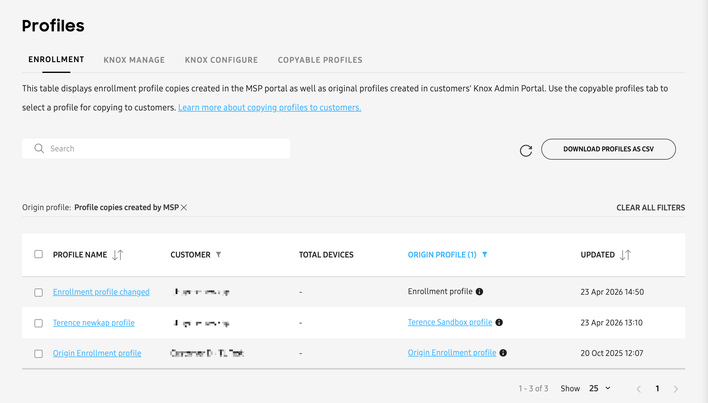
The following information is available in the table. You can also generate a CSV file containing the same information by clicking DOWNLOAD PROFILE(S) AS CSV.
- PROFILE NAME: The name of the Enrollment profile. Click the name to open the Profile page in the customer’s Knox Mobile Enrollment console.
- CUSTOMER: The name of your managed customer.
- TOTAL DEVICES: The total number of devices with this profile assigned.
- ORIGIN PROFILE: The name of the original profile from which it was copied. Click to open the profile page in the origin customer’s console.
- If the origin profile was modified after it was copied to another customer, an info icon is displayed. Hover over the icon for additional details.
- If the origin profile was deleted since the profile copy was made, an info icon is displayed and the link to the origin profile is removed.
- UPDATED: The date the profile was last modified, including any changes made by the customer on the customer’s own console.
Edits to an origin profile don’t get applied to your copied profiles. You must first update the origin profile, then copy the changes to your target customer. Additionally, any customizations you made to a copied profile will be completely replaced when you overwrite it with an updated origin profile. For more information, see Overwrite a profile.
Knox Manage profiles
The KNOX MANAGE tab displays a list of Knox Manage (original console) profiles in your managed customers’ accounts. By default, this tab displays only the profiles that you’ve copied from one customer to another. However, you can click CLEAR ALL FILTERS to display all of your customers’ Knox Manage (original console) profiles.
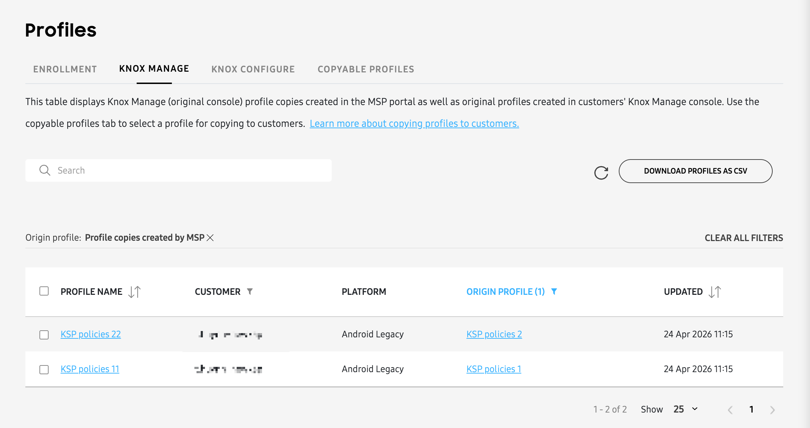
The following information is available in the table. You can also generate a CSV file containing the same information by clicking DOWNLOAD PROFILE(S) AS CSV.
- PROFILE NAME: The name of the profile. Click the name to open the Profile page in the customer’s Knox Manage original console that contains this specific profile.
- CUSTOMER: The name of your managed customer.
- PLATFORM: The device platform (OS) that the profile was designed for.
- ORIGIN PROFILE: The name of the original profile from which it was copied. Click to open the profile page in the origin customer’s console.
- UPDATED: The date the profile was last modified, including any changes made by the customer on the customer’s own console.
Edits to an origin profile don’t get applied to your copied profiles. You must first update the origin profile, then copy the changes to your target customer. Additionally, any customizations you made to a copied profile will be completely replaced when you overwrite it with an updated origin profile. For more information, see Overwrite a profile.
Knox Configure profiles
The KNOX CONFIGURE tab displays a list of Knox Configure profiles in your managed customers’ accounts. By default, this tab displays only the profiles that you’ve copied from one customer to another. However, you can click CLEAR ALL FILTERS to display all of your customers’ Knox Configure profiles.
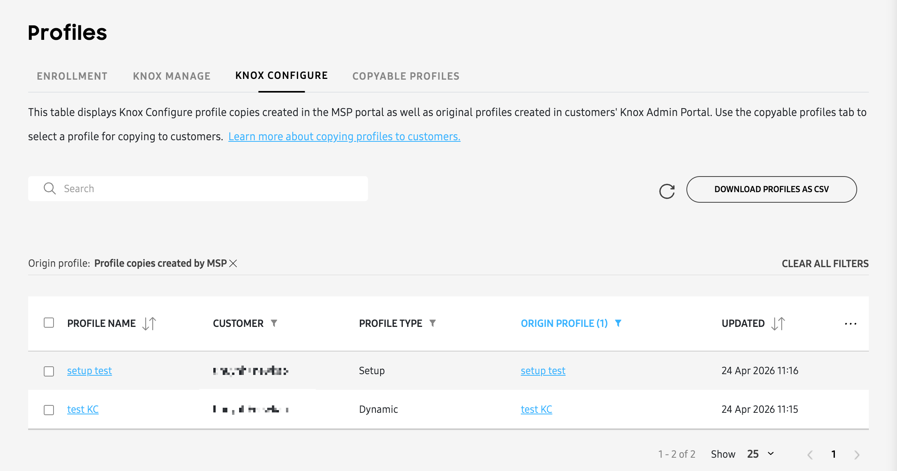
The following information is available in the table. You can also generate a CSV file containing the same information by clicking DOWNLOAD PROFILE(S) AS CSV.
- PROFILE NAME: The name of the profile. Click the name to open the Profile page in the customer’s Knox Configure console that contains this specific profile.
- CUSTOMER: The name of your managed customer.
- PROFILE TYPE: Knox Configure profile type (Setup or Dynamic).
- ORIGIN PROFILE: The name of the original profile from which it was copied. Click to open the profile page in the origin customer’s console.
- UPDATED: The date the profile was last modified, including any changes made by the customer on the customer’s own console.
On this page
Is this page helpful?